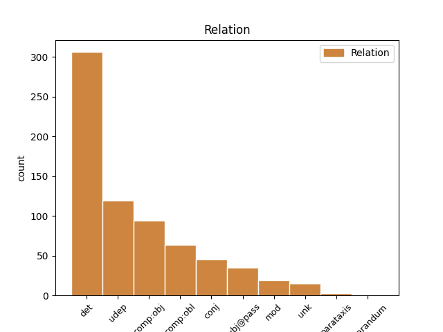
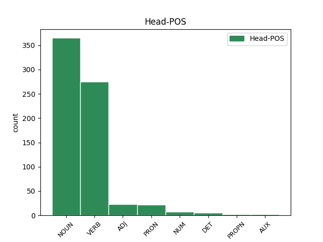
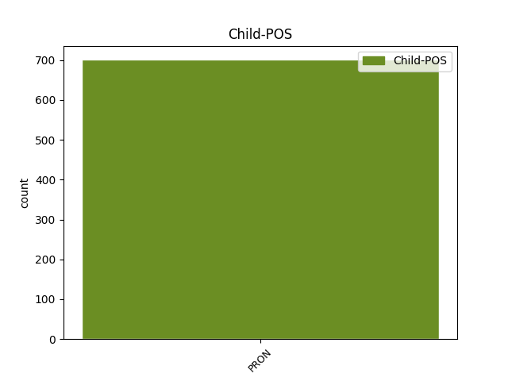

Distribution of features within this leaf



Agreement Rules sorted by frequency.
- When the dependent token is the determiner(det) of the head token, and the dependent token is PRON.
1 Strukturālā _ _ _ _ 0 _ _ _
2 vardarbība _ _ _ _ 0 _ _ _
3 ir _ _ _ _ 0 _ _ _
4 ietverta _ _ _ _ 0 _ _ _
5 sociālajā _ _ _ _ 0 _ _ _
6 struktūrā _ _ _ _ 0 _ _ _
7 , _ _ _ _ 0 _ _ _
8 neļaujot _ _ _ _ 0 _ _ _
9 indivīdiem _ _ _ _ 0 _ _ _
10 pilnībā _ _ _ _ 0 _ _ _
11 realizēt _ _ _ _ 0 _ _ _
12 viņu viņš PRON pp3mpgn Case=Gen|Gender=Masc|Number=Plur|Person=3|PronType=Prs 13 det _ LvtbNodeId=a-z99-p16s3w12
13 potenciālu potenciāls NOUN ncmsa1 Case=Acc|Gender=Masc|Number=Sing 0 _ _ _
14 . _ _ _ _ 0 _ _ _
1 Te _ _ _ _ 0 _ _ _
2 dominēja _ _ _ _ 0 _ _ _
3 stāstījumi _ _ _ _ 0 _ _ _
4 par _ _ _ _ 0 _ _ _
5 vāciešu _ _ _ _ 0 _ _ _
6 labvēlīgo _ _ _ _ 0 _ _ _
7 attieksmi _ _ _ _ 0 _ _ _
8 pret _ _ _ _ 0 _ _ _
9 bērniem _ _ _ _ 0 _ _ _
10 ( _ _ _ _ 0 _ _ _
11 parunājas _ _ _ _ 0 _ _ _
12 , _ _ _ _ 0 _ _ _
13 cienā _ _ _ _ 0 _ _ _
14 ar _ _ _ _ 0 _ _ _
15 konfektēm _ _ _ _ 0 _ _ _
16 un _ _ _ _ 0 _ _ _
17 šokolādi _ _ _ _ 0 _ _ _
18 ) _ _ _ _ 0 _ _ _
19 un _ _ _ _ 0 _ _ _
20 viņu viņš PRON pp3mpgn Case=Gen|Gender=Masc|Number=Plur|Person=3|PronType=Prs 21 udep _ LvtbNodeId=a-z89-p214s2w20
21 ieturēto ieturēt VERB vmnpdmsapsypn Aspect=Perf|Case=Acc|Definite=Def|Degree=Pos|Gender=Masc|Number=Sing|Polarity=Pos|Tense=Past|VerbForm=Part|Voice=Pass 0 _ _ _
22 uzvedības _ _ _ _ 0 _ _ _
23 līniju _ _ _ _ 0 _ _ _
24 attiecībās _ _ _ _ 0 _ _ _
25 ar _ _ _ _ 0 _ _ _
26 vietējiem _ _ _ _ 0 _ _ _
27 iedzīvotājiem _ _ _ _ 0 _ _ _
28 ( _ _ _ _ 0 _ _ _
29 nedara _ _ _ _ 0 _ _ _
30 pāri _ _ _ _ 0 _ _ _
31 , _ _ _ _ 0 _ _ _
32 palīdz _ _ _ _ 0 _ _ _
33 uzrakstīt _ _ _ _ 0 _ _ _
34 vēstules _ _ _ _ 0 _ _ _
35 vācu _ _ _ _ 0 _ _ _
36 pusē _ _ _ _ 0 _ _ _
37 karojošiem _ _ _ _ 0 _ _ _
38 tuviniekiem _ _ _ _ 0 _ _ _
39 u.tml. _ _ _ _ 0 _ _ _
40 ) _ _ _ _ 0 _ _ _
41 . _ _ _ _ 0 _ _ _
1 Lai _ _ _ _ 0 _ _ _
2 varētu _ _ _ _ 0 _ _ _
3 izsekot _ _ _ _ 0 _ _ _
4 verificējamā _ _ _ _ 0 _ _ _
5 procesa _ _ _ _ 0 _ _ _
6 instances _ _ _ _ 0 _ _ _
7 izpildei _ _ _ _ 0 _ _ _
8 , _ _ _ _ 0 _ _ _
9 katrs _ _ _ _ 0 _ _ _
10 no _ _ _ _ 0 _ _ _
11 notikumiem _ _ _ _ 0 _ _ _
12 satur _ _ _ _ 0 _ _ _
13 zināmus _ _ _ _ 0 _ _ _
14 to tas PRON pd3msan Case=Acc|Gender=Masc|Number=Sing|Person=3|PronType=Dem 15 comp:obj _ LvtbNodeId=a-z98-p27s3w14
15 identificējošus identificēt VERB vmnpdmpaapnpn Aspect=Imp|Case=Acc|Definite=Ind|Degree=Pos|Gender=Masc|Number=Plur|Polarity=Pos|Tense=Pres|VerbForm=Part|Voice=Act 0 _ _ _
16 parametrus _ _ _ _ 0 _ _ _
17 , _ _ _ _ 0 _ _ _
18 piemēram _ _ _ _ 0 _ _ _
19 , _ _ _ _ 0 _ _ _
20 faila _ _ _ _ 0 _ _ _
21 nosaukumu _ _ _ _ 0 _ _ _
22 , _ _ _ _ 0 _ _ _
23 kura _ _ _ _ 0 _ _ _
24 modificēšana _ _ _ _ 0 _ _ _
25 ir _ _ _ _ 0 _ _ _
26 jāpamana _ _ _ _ 0 _ _ _
27 , _ _ _ _ 0 _ _ _
28 vai _ _ _ _ 0 _ _ _
29 tabulas _ _ _ _ 0 _ _ _
30 ieraksta _ _ _ _ 0 _ _ _
31 identifikatoru _ _ _ _ 0 _ _ _
32 ieraksta _ _ _ _ 0 _ _ _
33 dzēšanas _ _ _ _ 0 _ _ _
34 gadījumā _ _ _ _ 0 _ _ _
35 . _ _ _ _ 0 _ _ _
1 Līdz _ _ _ _ 0 _ _ _
2 ar _ _ _ _ 0 _ _ _
3 to _ _ _ _ 0 _ _ _
4 , _ _ _ _ 0 _ _ _
5 izmantojot _ _ _ _ 0 _ _ _
6 redzes _ _ _ _ 0 _ _ _
7 asuma _ _ _ _ 0 _ _ _
8 mērījumus _ _ _ _ 0 _ _ _
9 krāsainiem _ _ _ _ 0 _ _ _
10 stimuliem _ _ _ _ 0 _ _ _
11 , _ _ _ _ 0 _ _ _
12 nevar _ _ _ _ 0 _ _ _
13 iegūt _ _ _ _ 0 _ _ _
14 viennozīmīgu _ _ _ _ 0 _ _ _
15 atbildi _ _ _ _ 0 _ _ _
16 par _ _ _ _ 0 _ _ _
17 gaismas _ _ _ _ 0 _ _ _
18 izkliedes _ _ _ _ 0 _ _ _
19 spektrālo _ _ _ _ 0 _ _ _
20 atkarību _ _ _ _ 0 _ _ _
21 miglā _ _ _ _ 0 _ _ _
22 un _ _ _ _ 0 _ _ _
23 citos cits PRON pi0mpln Case=Loc|Gender=Masc|Number=Plur|PronType=Ind 27 comp:obl _ LvtbNodeId=a-z93-p45s2w23
24 paaugstinātas _ _ _ _ 0 _ _ _
25 gaismas _ _ _ _ 0 _ _ _
26 izkliedes _ _ _ _ 0 _ _ _
27 apstākļos apstāklis NOUN ncmpl2 Case=Loc|Gender=Masc|Number=Plur 0 _ _ _
28 . _ _ _ _ 0 _ _ _
1 Tas _ _ _ _ 0 _ _ _
2 uztur _ _ _ _ 0 _ _ _
3 pārbaudes _ _ _ _ 0 _ _ _
4 moduļu _ _ _ _ 0 _ _ _
5 vārdnīcu _ _ _ _ 0 _ _ _
6 , _ _ _ _ 0 _ _ _
7 t.i. _ _ _ _ 0 _ _ _
8 , _ _ _ _ 0 _ _ _
9 pārzina _ _ _ _ 0 _ _ _
10 pieejamo _ _ _ _ 0 _ _ _
11 vides _ _ _ _ 0 _ _ _
12 pārbaudes _ _ _ _ 0 _ _ _
13 moduļu _ _ _ _ 0 _ _ _
14 klāstu klāsts NOUN ncmsa1 Case=Acc|Gender=Masc|Number=Sing 0 _ _ _
15 un _ _ _ _ 0 _ _ _
16 to tas PRON pd3msan Case=Acc|Gender=Masc|Number=Sing|Person=3|PronType=Dem 14 conj _ LvtbNodeId=a-z98-p77s2w16|SpaceAfter=No
17 , _ _ _ _ 0 _ _ _
18 kuri _ _ _ _ 0 _ _ _
19 moduļi _ _ _ _ 0 _ _ _
20 spēj _ _ _ _ 0 _ _ _
21 testēt _ _ _ _ 0 _ _ _
22 katru _ _ _ _ 0 _ _ _
23 no _ _ _ _ 0 _ _ _
24 prasībām _ _ _ _ 0 _ _ _
25 . _ _ _ _ 0 _ _ _
1 Šajos _ _ _ _ 0 _ _ _
2 piemēros _ _ _ _ 0 _ _ _
3 runa _ _ _ _ 0 _ _ _
4 ir _ _ _ _ 0 _ _ _
5 par _ _ _ _ 0 _ _ _
6 informāciju _ _ _ _ 0 _ _ _
7 , _ _ _ _ 0 _ _ _
8 par _ _ _ _ 0 _ _ _
9 kuras _ _ _ _ 0 _ _ _
10 ticamību _ _ _ _ 0 _ _ _
11 teksta _ _ _ _ 0 _ _ _
12 autors _ _ _ _ 0 _ _ _
13 galvot _ _ _ _ 0 _ _ _
14 nevar _ _ _ _ 0 _ _ _
15 , _ _ _ _ 0 _ _ _
16 jo _ _ _ _ 0 _ _ _
17 konteksts _ _ _ _ 0 _ _ _
18 liecina _ _ _ _ 0 _ _ _
19 , _ _ _ _ 0 _ _ _
20 ka _ _ _ _ 0 _ _ _
21 tā tā PRON pd3fsnn Case=Nom|Gender=Fem|Number=Sing|Person=3|PronType=Dem 22 subj@pass _ LvtbNodeId=a-z82-p222s1w21
22 saņemta saņemt VERB vmnpdfsnpsnpn Aspect=Perf|Case=Nom|Definite=Ind|Degree=Pos|Gender=Fem|Number=Sing|Polarity=Pos|Tense=Past|VerbForm=Part|Voice=Pass 0 _ _ _
23 pastarpinātā _ _ _ _ 0 _ _ _
24 ceļā _ _ _ _ 0 _ _ _
25 un _ _ _ _ 0 _ _ _
26 nav _ _ _ _ 0 _ _ _
27 novērota _ _ _ _ 0 _ _ _
28 tieši _ _ _ _ 0 _ _ _
29 . _ _ _ _ 0 _ _ _
1 Aplūkojot _ _ _ _ 0 _ _ _
2 salīdzinājumu _ _ _ _ 0 _ _ _
3 pa _ _ _ _ 0 _ _ _
4 atsevišķiem _ _ _ _ 0 _ _ _
5 lauku _ _ _ _ 0 _ _ _
6 rajoniem _ _ _ _ 0 _ _ _
7 , _ _ _ _ 0 _ _ _
8 redzam _ _ _ _ 0 _ _ _
9 , _ _ _ _ 0 _ _ _
10 ka _ _ _ _ 0 _ _ _
11 pastāv _ _ _ _ 0 _ _ _
12 zināma _ _ _ _ 0 _ _ _
13 korelācija _ _ _ _ 0 _ _ _
14 starp _ _ _ _ 0 _ _ _
15 iedzīvotāju _ _ _ _ 0 _ _ _
16 blīvumu _ _ _ _ 0 _ _ _
17 rajonā _ _ _ _ 0 _ _ _
18 un _ _ _ _ 0 _ _ _
19 skolēnu _ _ _ _ 0 _ _ _
20 skaita _ _ _ _ 0 _ _ _
21 un _ _ _ _ 0 _ _ _
22 pedagoģisko _ _ _ _ 0 _ _ _
23 darbinieku _ _ _ _ 0 _ _ _
24 skaita _ _ _ _ 0 _ _ _
25 attiecību attiecība NOUN ncfsa4 Case=Acc|Gender=Fem|Number=Sing 0 _ _ _
26 tajā tā PRON pd3fsln Case=Loc|Gender=Fem|Number=Sing|Person=3|PronType=Dem 25 mod _ LvtbNodeId=a-z46-p15s1w26|SpaceAfter=No
27 . _ _ _ _ 0 _ _ _
1 No _ _ _ _ 0 _ _ _
2 23 _ _ _ _ 0 _ _ _
3 OECD _ _ _ _ 0 _ _ _
4 valstīm _ _ _ _ 0 _ _ _
5 , _ _ _ _ 0 _ _ _
6 par _ _ _ _ 0 _ _ _
7 kurām _ _ _ _ 0 _ _ _
8 informācija _ _ _ _ 0 _ _ _
9 ir _ _ _ _ 0 _ _ _
10 norādīta _ _ _ _ 0 _ _ _
11 abus _ _ _ _ 0 _ _ _
12 gadus _ _ _ _ 0 _ _ _
13 , _ _ _ _ 0 _ _ _
14 tikai _ _ _ _ 0 _ _ _
15 Meksikas _ _ _ _ 0 _ _ _
16 sākumizglītībā _ _ _ _ 0 _ _ _
17 skolēnu _ _ _ _ 0 _ _ _
18 skaita _ _ _ _ 0 _ _ _
19 un _ _ _ _ 0 _ _ _
20 skolotāju _ _ _ _ 0 _ _ _
21 skaita _ _ _ _ 0 _ _ _
22 attiecība _ _ _ _ 0 _ _ _
23 ir _ _ _ _ 0 _ _ _
24 pieaugusi _ _ _ _ 0 _ _ _
25 un _ _ _ _ 0 _ _ _
26 tikai _ _ _ _ 0 _ _ _
27 Francijā _ _ _ _ 0 _ _ _
28 un _ _ _ _ 0 _ _ _
29 Ungārijā _ _ _ _ 0 _ _ _
30 tā tā PRON pd3fsnn Case=Nom|Gender=Fem|Number=Sing|Person=3|PronType=Dem 31 unk _ LvtbNodeId=a-z46-p7s8w30
31 palikusi palikt VERB vmnpdfsnasnpn Aspect=Perf|Case=Nom|Definite=Ind|Degree=Pos|Gender=Fem|Number=Sing|Polarity=Pos|Tense=Past|VerbForm=Part|Voice=Act 0 _ _ _
32 praktiski _ _ _ _ 0 _ _ _
33 iepriekšējā _ _ _ _ 0 _ _ _
34 līmenī _ _ _ _ 0 _ _ _
35 . _ _ _ _ 0 _ _ _
1 Lasot _ _ _ _ 0 _ _ _
2 VD _ _ _ _ 0 _ _ _
3 , _ _ _ _ 0 _ _ _
4 var _ _ _ _ 0 _ _ _
5 pamanīt _ _ _ _ 0 _ _ _
6 , _ _ _ _ 0 _ _ _
7 ka _ _ _ _ 0 _ _ _
8 pārsvarā _ _ _ _ 0 _ _ _
9 dominē _ _ _ _ 0 _ _ _
10 tiešā _ _ _ _ 0 _ _ _
11 vardarbība _ _ _ _ 0 _ _ _
12 , _ _ _ _ 0 _ _ _
13 tāpēc _ _ _ _ 0 _ _ _
14 aplūkojamās _ _ _ _ 0 _ _ _
15 tēmas _ _ _ _ 0 _ _ _
16 sakarā _ _ _ _ 0 _ _ _
17 būtu _ _ _ _ 0 _ _ _
18 lietderīgi _ _ _ _ 0 _ _ _
19 vardarbību _ _ _ _ 0 _ _ _
20 definēt _ _ _ _ 0 _ _ _
21 kā _ _ _ _ 0 _ _ _
22 cilvēku _ _ _ _ 0 _ _ _
23 veiktu _ _ _ _ 0 _ _ _
24 vardarbību _ _ _ _ 0 _ _ _
25 , _ _ _ _ 0 _ _ _
26 konkretizējot _ _ _ _ 0 _ _ _
27 to tas PRON pd3msan Case=Acc|Gender=Masc|Number=Sing|Person=3|PronType=Dem 0 _ _ _
28 ( _ _ _ _ 0 _ _ _
29 kurš kurš PRON pq0msnn Case=Nom|Gender=Masc|Number=Sing|PronType=Int 27 parataxis _ LvtbNodeId=a-z99-p16s8w29
30 un _ _ _ _ 0 _ _ _
31 kāpēc _ _ _ _ 0 _ _ _
32 vardarbīgi _ _ _ _ 0 _ _ _
33 rīkojas _ _ _ _ 0 _ _ _
34 ) _ _ _ _ 0 _ _ _
35 . _ _ _ _ 0 _ _ _
1 Tie tas PRON pd3mpnn Case=Nom|Gender=Masc|Number=Plur|Person=3|PronType=Dem 3 reparandum _ LvtbNodeId=a-p3447-p33s7w1
2 pamatā _ _ _ _ 0 _ _ _
3 tie tas PRON pd3mpnn Case=Nom|Gender=Masc|Number=Plur|Person=3|PronType=Dem 0 _ _ _
4 nāk _ _ _ _ 0 _ _ _
5 no _ _ _ _ 0 _ _ _
6 Krievijas _ _ _ _ 0 _ _ _
7 . _ _ _ _ 0 _ _ _
Disagree Examples:
1 Viņa _ _ _ _ 0 _ _ _
2 , _ _ _ _ 0 _ _ _
3 tāpat _ _ _ _ 0 _ _ _
4 kā _ _ _ _ 0 _ _ _
5 viņas viņa PRON pp3fsgn Case=Gen|Gender=Fem|Number=Sing|Person=3|PronType=Prs 6 det _ LvtbNodeId=a-c15-p10s2w5
6 vīrs vīrs NOUN ncmsn1 Case=Nom|Gender=Masc|Number=Sing 0 _ _ _
7 Zevs _ _ _ _ 0 _ _ _
8 , _ _ _ _ 0 _ _ _
9 ir _ _ _ _ 0 _ _ _
10 pavēlniece _ _ _ _ 0 _ _ _
11 pār _ _ _ _ 0 _ _ _
12 pērkoniem _ _ _ _ 0 _ _ _
13 un _ _ _ _ 0 _ _ _
14 zibeņiem _ _ _ _ 0 _ _ _
15 ; _ _ _ _ 0 _ _ _
16 paklausot _ _ _ _ 0 _ _ _
17 viņas _ _ _ _ 0 _ _ _
18 vārdam _ _ _ _ 0 _ _ _
19 , _ _ _ _ 0 _ _ _
20 tumšo _ _ _ _ 0 _ _ _
21 lietus _ _ _ _ 0 _ _ _
22 mākoņi _ _ _ _ 0 _ _ _
23 klāj _ _ _ _ 0 _ _ _
24 debesis _ _ _ _ 0 _ _ _
25 , _ _ _ _ 0 _ _ _
26 un _ _ _ _ 0 _ _ _
27 viņas _ _ _ _ 0 _ _ _
28 rokas _ _ _ _ 0 _ _ _
29 mājiens _ _ _ _ 0 _ _ _
30 rada _ _ _ _ 0 _ _ _
31 drausmīgas _ _ _ _ 0 _ _ _
32 vētras _ _ _ _ 0 _ _ _
33 . _ _ _ _ 0 _ _ _
1 Viņa _ _ _ _ 0 _ _ _
2 , _ _ _ _ 0 _ _ _
3 tāpat _ _ _ _ 0 _ _ _
4 kā _ _ _ _ 0 _ _ _
5 viņas _ _ _ _ 0 _ _ _
6 vīrs _ _ _ _ 0 _ _ _
7 Zevs _ _ _ _ 0 _ _ _
8 , _ _ _ _ 0 _ _ _
9 ir _ _ _ _ 0 _ _ _
10 pavēlniece _ _ _ _ 0 _ _ _
11 pār _ _ _ _ 0 _ _ _
12 pērkoniem _ _ _ _ 0 _ _ _
13 un _ _ _ _ 0 _ _ _
14 zibeņiem _ _ _ _ 0 _ _ _
15 ; _ _ _ _ 0 _ _ _
16 paklausot _ _ _ _ 0 _ _ _
17 viņas viņa PRON pp3fsgn Case=Gen|Gender=Fem|Number=Sing|Person=3|PronType=Prs 18 det _ LvtbNodeId=a-c15-p10s2w17
18 vārdam vārds NOUN ncmsd1 Case=Dat|Gender=Masc|Number=Sing 0 _ _ _
19 , _ _ _ _ 0 _ _ _
20 tumšo _ _ _ _ 0 _ _ _
21 lietus _ _ _ _ 0 _ _ _
22 mākoņi _ _ _ _ 0 _ _ _
23 klāj _ _ _ _ 0 _ _ _
24 debesis _ _ _ _ 0 _ _ _
25 , _ _ _ _ 0 _ _ _
26 un _ _ _ _ 0 _ _ _
27 viņas _ _ _ _ 0 _ _ _
28 rokas _ _ _ _ 0 _ _ _
29 mājiens _ _ _ _ 0 _ _ _
30 rada _ _ _ _ 0 _ _ _
31 drausmīgas _ _ _ _ 0 _ _ _
32 vētras _ _ _ _ 0 _ _ _
33 . _ _ _ _ 0 _ _ _
1 Ja _ _ _ _ 0 _ _ _
2 pusaudzis _ _ _ _ 0 _ _ _
3 ir _ _ _ _ 0 _ _ _
4 gatavs _ _ _ _ 0 _ _ _
5 jums _ _ _ _ 0 _ _ _
6 uzticēties _ _ _ _ 0 _ _ _
7 , _ _ _ _ 0 _ _ _
8 klausieties _ _ _ _ 0 _ _ _
9 uzmanīgi _ _ _ _ 0 _ _ _
10 viņa viņa PRON pp3msgn Case=Gen|Gender=Masc|Number=Sing|Person=3|PronType=Prs 11 udep _ LvtbNodeId=a-c26-p48s1w10
11 teiktajā teikt VERB vmnpdfslpsypn Aspect=Perf|Case=Loc|Definite=Def|Degree=Pos|Gender=Fem|Number=Sing|Polarity=Pos|Tense=Past|VerbForm=Part|Voice=Pass 0 _ _ _
12 . _ _ _ _ 0 _ _ _
1 Tagad _ _ _ _ 0 _ _ _
2 vēlos _ _ _ _ 0 _ _ _
3 vakaros _ _ _ _ 0 _ _ _
4 un _ _ _ _ 0 _ _ _
5 agros _ _ _ _ 0 _ _ _
6 rītos _ _ _ _ 0 _ _ _
7 klusu _ _ _ _ 0 _ _ _
8 klausos _ _ _ _ 0 _ _ _
9 viņu viņš PRON pp3mpgn Case=Gen|Gender=Masc|Number=Plur|Person=3|PronType=Prs 13 det _ LvtbNodeId=a-c47-p3s5w9
10 dziļajā _ _ _ _ 0 _ _ _
11 , _ _ _ _ 0 _ _ _
12 čīkstošajā _ _ _ _ 0 _ _ _
13 elpā elpa NOUN ncfsl4 Case=Loc|Gender=Fem|Number=Sing 0 _ _ _
14 . _ _ _ _ 0 _ _ _
1 Cik _ _ _ _ 0 _ _ _
2 gara _ _ _ _ 0 _ _ _
3 likās _ _ _ _ 0 _ _ _
4 viņu viņš PRON pp3mpgn Case=Gen|Gender=Masc|Number=Plur|Person=3|PronType=Prs 5 det _ LvtbNodeId=a-c47-p3s9w4
5 dzīve dzīve NOUN ncfsn5 Case=Nom|Gender=Fem|Number=Sing 0 _ _ _
6 . _ _ _ _ 0 _ _ _